Glossary
Black-Scholes Greeks & Elasticity
All of the variables used on the right hand sides below are
defined in the glossary entry for the Black-Scholes value presented immediately
after the greeks. The first derivative
of the standardized cumulative Normal distribution, expressed as  , occurs frequently below - it’s defined in a Glossary entry
for the Normal distribution. In all
cases, the values reported for the Black-Scholes greeks in NillaHedge are
annual values. For simplicity’s sake,
all of the expressions for the greeks below are based on a continuous dividend
yield Black-Scholes model. However, the
Option Analyzer relies primarily on a present value dividends model (not
presented in the glossary entries below) and only falls back to the continuous
model in rare situations where the present value model can’t be evaluated.
, occurs frequently below - it’s defined in a Glossary entry
for the Normal distribution. In all
cases, the values reported for the Black-Scholes greeks in NillaHedge are
annual values. For simplicity’s sake,
all of the expressions for the greeks below are based on a continuous dividend
yield Black-Scholes model. However, the
Option Analyzer relies primarily on a present value dividends model (not
presented in the glossary entries below) and only falls back to the continuous
model in rare situations where the present value model can’t be evaluated.
Delta
Delta measures the option’s sensitivity to the underlying stock’s price. When the investment objective is to hedge a stock position against risk, investors typically seek to maintain what’s called a delta neutral position. That’s accomplished by selling shares of the underlying stock for each option you own. Of course, as the stock price changes, it will rapidly become apparent that this is a moving target, hence the interest in gamma. See also: Elasticity.
Calls: 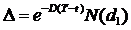
Puts:
Elasticity
An option’s
elasticity is the option’s delta scaled into the relevant currency, i.e.  , where V is the
option’s Black-Scholes value and S is the underlying stock’s price. Elasticity indicates how much movement you
can expect in the option’s value given a change in the underlying stock’s
price, e.g. a call selling for $2.00 with on an underlying stock
selling for $30 has elasticity,
, where V is the
option’s Black-Scholes value and S is the underlying stock’s price. Elasticity indicates how much movement you
can expect in the option’s value given a change in the underlying stock’s
price, e.g. a call selling for $2.00 with on an underlying stock
selling for $30 has elasticity,  , so a 1% increase in the stock price justifies a 6 %
increase in the market value of the call.
Puts generally have negative elasticity since changes in put values run
counter to movements in the price of the underlying stock.
, so a 1% increase in the stock price justifies a 6 %
increase in the market value of the call.
Puts generally have negative elasticity since changes in put values run
counter to movements in the price of the underlying stock.
Gamma
Gamma measures the rate of change in delta with respect to the underlying stock’s price. If you want to maintain a delta neutral position in a given stock, an option with high gamma will have to be re-hedged more often than one with low gamma, thus potentially costing you more in transaction fees. Skilled hedge investors try to find two or more options on the same underlying stock with counterbalancing gammas, thereby constructing a (near) gamma neutral position which will thereby minimize the need to re-hedge in response to movements in the stock price.

Rho(D)
Rho(D) is the option’s price sensitivity to changes in the underlying stock’s dividends.
Calls: 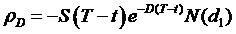
Puts: 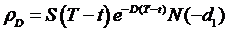
Rho(r)
Rho(r) is the option’s price sensitivity to changes in the risk free rate.
Calls: 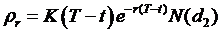
Puts: 
Note: Most systems don’t distinguish between rate sensitivities, reporting only something vaguely called rho. NillaHedge’s is probably the equivalent of other systems’ rho.
Theta
Theta measures the option’s price sensitivity with respect to the passage of time (t).
Calls: 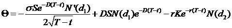
Puts: 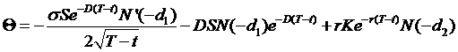
John Hull and Paul Wilmott each
give the expression above for theta, the first derivative of option value with
respect to time, and I concur. Please do
not be misled by Henry Tang’s derivation in:
http://www.quantnotes.com/fundamentals/options/thegreeks-theta.htm. Tang skips over a number of ‘trivial’ steps
in his derivation of theta for a vanilla call and loses track of the continuous
dividend yield discounting factor () in the first term.
If you decide to embark on a derivation of your own, you’ll quickly find
that the last two terms fall straight out of the product rule, but you may
initially scratch your head on how to convert (for a call) 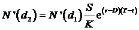 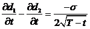 into the first
term. A detailed derivation is beyond
the scope of this documentation, but it should be obvious that
into the first
term. A detailed derivation is beyond
the scope of this documentation, but it should be obvious that  is key to the
transformation. In particular, you’ll
need
is key to the
transformation. In particular, you’ll
need
Vega
Vega measures the option’s price sensitivity to changes in the underlying stock’s volatility.
Puts & Calls: 
Black-Scholes Value
There are a number of formulae that express the Black-Scholes value for an option. Many commonly assume that there are no dividends, so the term , effectively making it disappear and simplifying the expression for the Put and Call values. The expression below is more accurate than tossing the dividends out the window, but it’s not perfect because the continuous yield model accounts for dividends on the underlying stock even in situations where the ex-dividend date is after the option’s expiration date. Real option prices respond to dividends whose ex-dividend date lands between the present time and the option’s expiration date. NillaHedge uses the present value of discrete dividends where possible rather than averaging the dividend spikes through the calendar year as defined in the expressions below.
Early on, The Time Decay Explorer (TDX) always used the continuous model, but the plotting architecture now allows it to apply the present value model wherever it can be evaluated, hence the discontinuities in TDX plots when dividends are defined in the underlying stock. Given the low likelihood that you’d ever come across a discrete dividend version of Black-Scholes, we’ve only presented the continuous yield version here. The following expressions are discussed in several books authored by Paul Wilmott, as well as one by John Hull, among others. Don’t be put off by the N(x) expression below - it’s just the standardized (zero mean with a standard deviation of one) cumulative Normal distribution, discussed later in the Glossary.
|
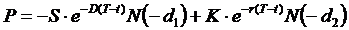
|
C := call value D := annualized dividend yield K := strike price P := put value r := risk free rate
S := stock price t : = current date (years) T := maturity date (years) |


Normal Distribution
Assuming a standardized Normal distribution, the probability of an event occurring at or below x is given by:
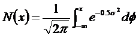
The first derivative of the standardized cumulative Normal distribution is the probability density function for a standardized Normal distribution. The Normal p.d.f. turns up frequently in expressions for various Black-Scholes’ greeks as , defined as:
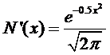
Probability of Closing In The Money, p(cITM)
The probability of closing In The Money is an indication of the likelihood of that the option will expire with the stock price above the strike if the option is a call; or below the strike price if the option is a put. This probability is a natural outgrowth of Black-Scholes pricing theory, discussed below.
Calls: 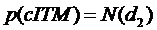
Puts:
Volatility
Volatility - a measure of the amount by which stock returns have fluctuated (historical volatility) or are expected to fluctuate (expected volatility) in the future. The volatility of a stock is the standard deviation of the continuously compounded rates of return over a specified period. It’s equivalent to the standard deviation of the differences in the natural logarithms of the stock prices plus dividends, if any, over the period. Although the observation period may be less than a year or several years, by convention, volatility represents the standard deviation in the stock’s annual returns. The higher the volatility, the more you can expect returns on the stock to vary. Volatility is sometimes quoted as a percentage, but in NillaHedge, it’s not scaled up by 100. If you use volatility from a source that reports it as an annual percentage, be sure to scale it back down. An excellent source for volatility values (reported as percentages) is Robert's Historical Stock Volatilities.[1] An excerpt appears in the Resources section, near the end of the user manual.